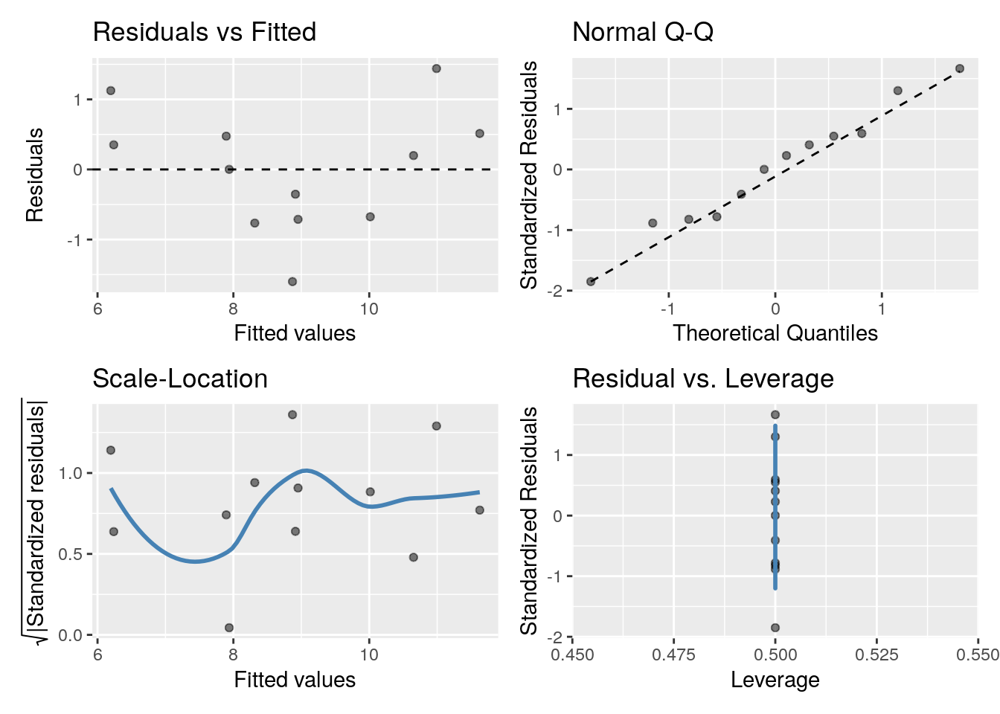

8 Blocking: incorporating into design and analysis of
8.1 Learning objectives
- Describe a Randomized Complete Block Design (RCBD)
- Describe a Split-plot Design (RCBD)
- Carry out analysis of a RCBD in
Rusingaov(),lm(), andlmer()and discuss and compare the three - Define a fixed and random effect in the context of experimental design
8.2 Blocking
Recall
Blocking helps control variability by making treatment groups more alike. Experimental units are divided into subsets (called blocks) so that units within the same block are more similar than units from different subsets or blocks.
Blocking is a technique for dealing with nuisance factors. A nuisance factor is a factor that has some effect on the response, but is of no interest (e.g., age class).
Key idea
Partition known sources of variation which are unimportant to key scientific question(s) to improve precision of comparisons between treatment means.
8.3 A Randomised Controlled Block Design (RCBD)
response = systematic component + error component
8.4 Fixed or Random???

Fixed effects
Terms (parameters) in a statistical model which are fixed, or non-random, quantities. For example, Treatment group’s mean response: for the same Treatment, we expect this quantity to be the same from experiment to experiment.
- Terms with specific levels chosen for the experiment, and the primary aim is unbiased estimation of effects, should be allocated as fixed
Random effects
Terms (parameters) in a statistical model which are considered as random quantities or variables.
- Terms associated with the structure of the design should be allocated as random.
- Terms whose levels are a representative sample from a population, and where the variance of the population is of interest, should be allocated as random
8.4.1 Ignoring an effect
You'll find the rcbd.csv file on CANVAS.
library(tidyverse)
rcbd <- read_csv("rcbd.csv")## Note: Run should be a factor
rcbd$Run <- as.factor(rcbd$Run)
glimpse(rcbd)## Rows: 12
## Columns: 5
## $ Run <fct> 1, 1, 1, 2, 2, 2, 3, 3, 3, 4, 4, 4
## $ Surgery <chr> "C", "P", "S", "C", "P", "S", "C", "P", "S", "C", "P", "S"
## $ Rat <dbl> 1, 2, 3, 4, 5, 6, 7, 8, 9, 10, 11, 12
## $ logAUC8 <dbl> 9.24, 8.81, 10.75, 3.89, 8.62, 10.24, 8.42, 9.93, 11.68, 8.77…
## $ logAUC4 <dbl> 7.55, 9.34, 12.43, 6.59, 7.94, 8.56, 7.32, 8.37, 7.27, 8.24, …One-way vs two-way...
anova(lm(logAUC4 ~ Surgery, data = rcbd))## Analysis of Variance Table
##
## Response: logAUC4
## Df Sum Sq Mean Sq F value Pr(>F)
## Surgery 2 14.662 7.3308 2.5034 0.1366
## Residuals 9 26.355 2.9284lm2 <- lm(logAUC4 ~ Run + Surgery, data = rcbd)
anova(lm2)## Analysis of Variance Table
##
## Response: logAUC4
## Df Sum Sq Mean Sq F value Pr(>F)
## Run 3 18.1317 6.0439 4.4097 0.05812 .
## Surgery 2 14.6617 7.3308 5.3487 0.04640 *
## Residuals 6 8.2235 1.3706
## ---
## Signif. codes: 0 '***' 0.001 '**' 0.01 '*' 0.05 '.' 0.1 ' ' 1Always check assumptions
gglm::gglm(lm2)
8.4.2 Analysis using lmer() from lme4
library(lme4)
lmer_mod <- lmer(logAUC8 ~ Surgery + (1|Run), data = rcbd)
summary(lmer_mod)## Linear mixed model fit by REML ['lmerMod']
## Formula: logAUC8 ~ Surgery + (1 | Run)
## Data: rcbd
##
## REML criterion at convergence: 37.2
##
## Scaled residuals:
## Min 1Q Median 3Q Max
## -1.8525 -0.2273 0.1772 0.4036 1.3309
##
## Random effects:
## Groups Name Variance Std.Dev.
## Run (Intercept) 1.479 1.216
## Residual 1.447 1.203
## Number of obs: 12, groups: Run, 4
##
## Fixed effects:
## Estimate Std. Error t value
## (Intercept) 7.5800 0.8552 8.863
## SurgeryP 1.9750 0.8506 2.322
## SurgeryS 3.8500 0.8506 4.526
##
## Correlation of Fixed Effects:
## (Intr) SrgryP
## SurgeryP -0.497
## SurgeryS -0.497 0.500Now what about the Random effects
We have two variance components
- Between Groups (Runs) \(\hat{\sigma^2}_{\text{Run}}\) = 1.479
- Within Runs (between observations) \(\hat{\sigma_2}\) = 1.447
Note that aov() presents the same information, but in a different way:
summary(aov(logAUC8 ~ Surgery + Error(Run), data = rcbd))##
## Error: Run
## Df Sum Sq Mean Sq F value Pr(>F)
## Residuals 3 17.65 5.883
##
## Error: Within
## Df Sum Sq Mean Sq F value Pr(>F)
## Surgery 2 29.652 14.826 10.25 0.0116 *
## Residuals 6 8.682 1.447
## ---
## Signif. codes: 0 '***' 0.001 '**' 0.01 '*' 0.05 '.' 0.1 ' ' 1- Within Runs (Residuals) \(\hat{\sigma}_2\) = 1.447 (same as
lmer) - Between Run variance = \(\hat{\sigma}^2\) + \(3\:\hat{\sigma}^2_{\text{Run}}\) so \(\hat{\sigma}^2_{\text{Run}} = \frac{5.883 - \hat{\sigma}^2 }{3} = \frac{5.883 - 1.447}{3} = 1.479\)
8.4.2.1 SEMs & SEDs
library(predictmeans)
pred_means <- predictmeans(lmer_mod, modelterm = "Surgery", pairwise = TRUE, plot = FALSE)
pred_means## $`Predicted Means`
## Surgery
## C P S
## 7.580 9.555 11.430
##
## $`Standard Error of Means`
## All means have the same Stder
## 0.85524
##
## $`Standard Error of Differences`
## Max.SED Min.SED Aveg.SED
## 0.8505913 0.8505913 0.8505913
##
## $LSD
## Max.LSD Min.LSD Aveg.LSD
## 2.08132 2.08132 2.08132
## attr(,"Significant level")
## [1] 0.05
## attr(,"Degree of freedom")
## [1] 6
##
## $`Pairwise LSDs`
## C P S
## C 0.00000 -1.97500 -3.850
## P 2.08132 0.00000 -1.875
## S 2.08132 2.08132 0.000
## attr(,"Significant level")
## [1] 0.05
## attr(,"Degree of freedom")
## [1] 6
## attr(,"Note")
## [1] "LSDs matrix has mean differences (row-col) above the diagonal, LSDs (adjusted by 'none' method) below the diagonal"
##
## $`Pairwise p-value`
## C P S
## C 0.0000 -2.3219 -4.5263
## P 0.0593 0.0000 -2.2043
## S 0.0040 0.0697 0.0000
## attr(,"Degree of freedom")
## [1] 6
## attr(,"Note")
## [1] "The matrix has t-value above the diagonal, p-value (adjusted by 'none' method) below the diagonal"
## attr(,"Letter-based representation of pairwise comparisons at significant level '0.05'")
## Treatment Mean Group
## 1 S 11.430 A
## 2 P 9.555 AB
## 3 C 7.580 B
##
## $mean_table
## Surgery Predicted means Standard error Df LL of 95% CI UL of 95% CI
## 1 C 7.580 0.8552404 6 5.487302 9.672698
## 2 P 9.555 0.8552404 6 7.462302 11.647698
## 3 S 11.430 0.8552404 6 9.337302 13.522698